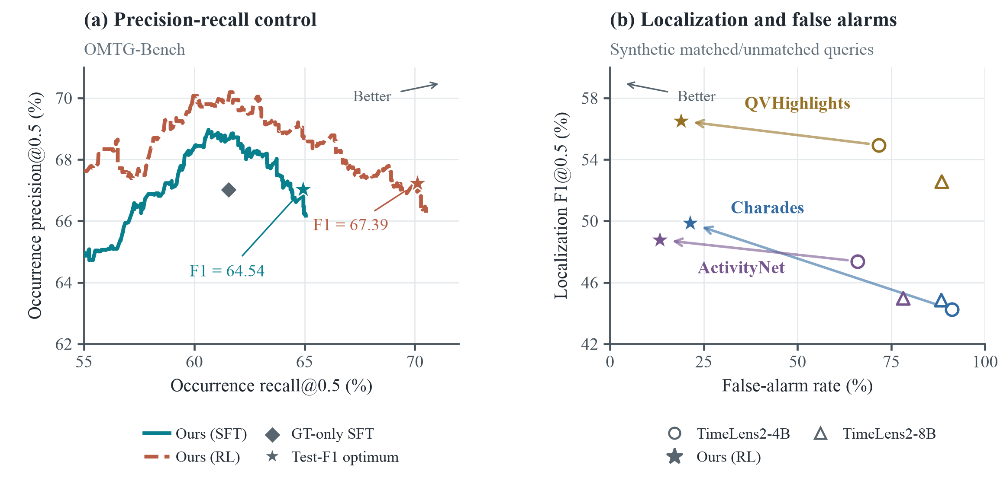
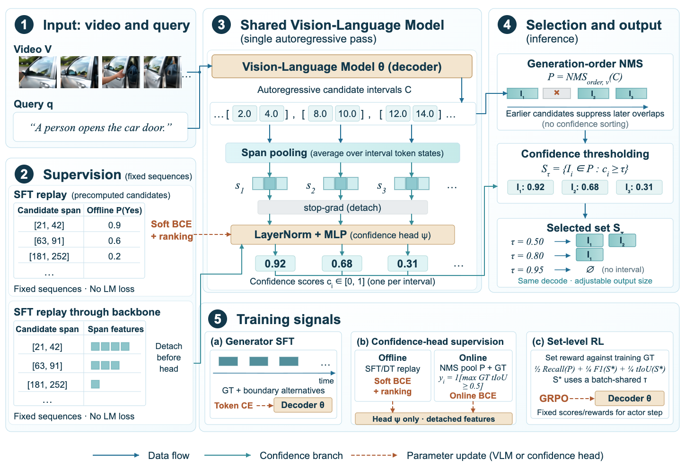
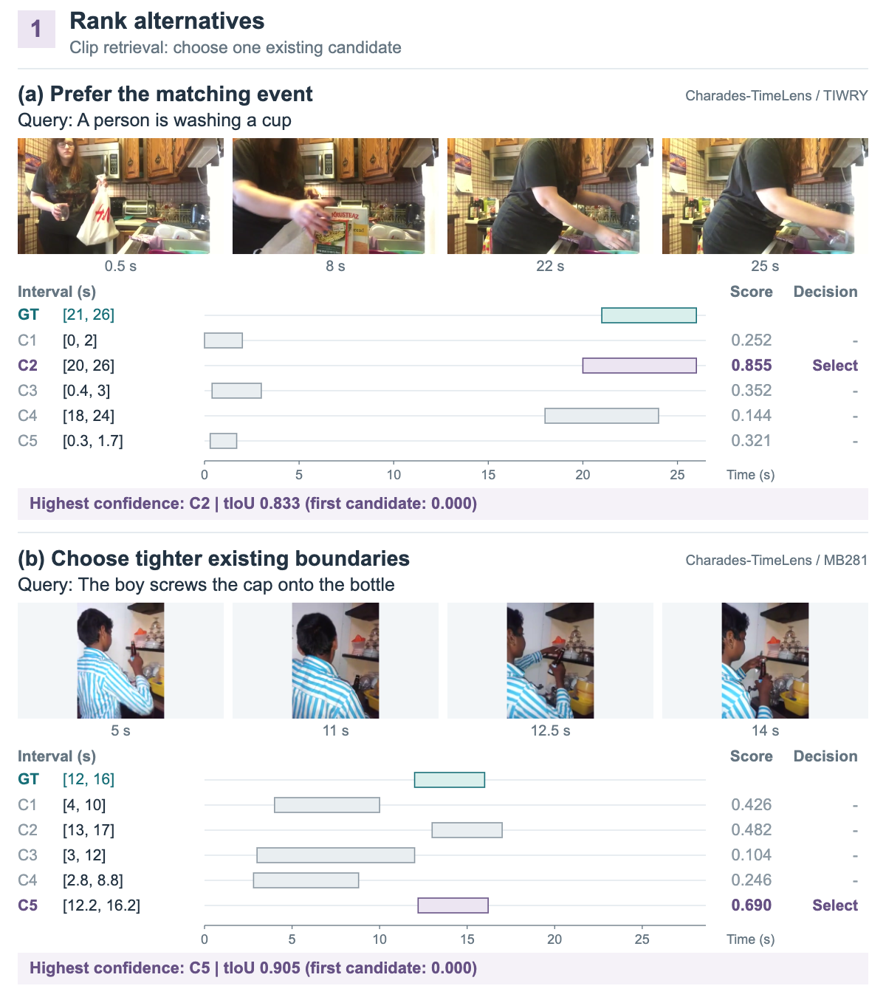
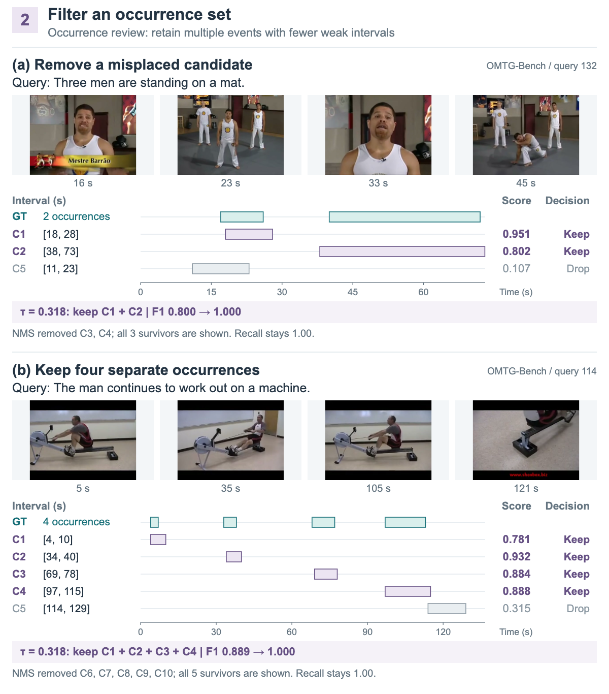
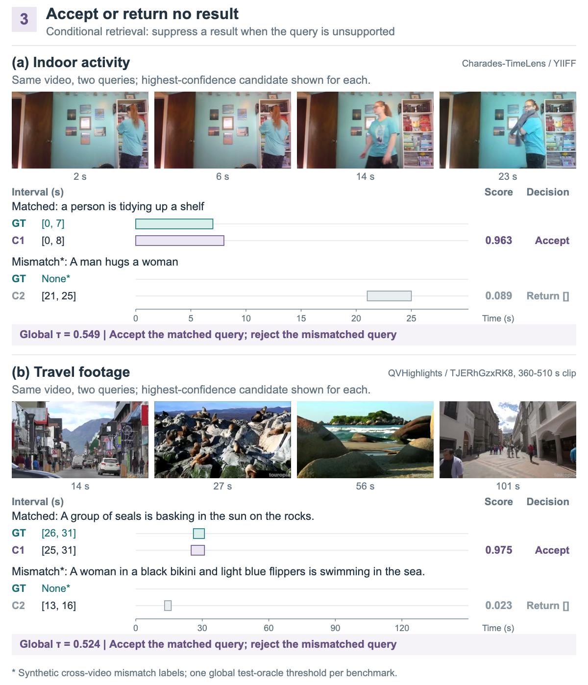

Rank alternatives
Prefer a useful clip over the first interval the model happens to generate.
Controllable Generative Video Temporal Grounding
Finding a moment is only half the story.
Learn which moments to return — and when to return nothing.
01 / THE IDEA
Generate a candidate pool and score every interval in the original decoding pass. Adjust the threshold, not the model.
A person opens the car door.
Generation-order NMS happens first. Confidence never reorders NMS.
[[2.0, 4.0], [8.0, 10.0]]Two intervals retained. No new decoding.
Drag to explore the mechanism. Values are schematic, not live model predictions or a calibrated deployment threshold.
Prefer a useful clip over the first interval the model happens to generate.
Keep several plausible events while removing weaker candidates.
Allow an empty result when no candidate passes the acceptance rule.
02 / THE EVIDENCE
When the return budget is tight, choosing the right candidates matters most. Compare selectors on exactly the same candidate pool.
+4.47 percentage points over generation order at a 10% budget.
| Budget | Order | Likelihood | Verifier | Ours |
|---|---|---|---|---|
| 10% | 9.95 | 9.41 | 11.00 | 14.42 |
| 25% | 26.48 | 22.37 | 26.31 | 31.12 |
| 50% | 51.34 | 43.05 | 47.72 | 52.82 |
| 75% | 64.76 | 61.00 | 62.45 | 65.30 |

03 / UNDER THE HOOD
No additional confidence tokens. No inference-time verifier. A lightweight head reads the decoder states already produced for each interval.
One autoregressive pass generates intervals. Pool the consumed-token states for each candidate.
SHARED VISION–LANGUAGE BACKBONETrain a detached confidence head with offline soft labels, then online overlap supervision.
LAYERNORM + 2-LAYER MLPRun generation-order NMS, then threshold confidence. The same pool supports different returned sets.
NO ADDITIONAL DECODING
04 / SEE THE DECISIONS
Real examples from the paper illustrate three uses of interval confidence. Explore the decisions, not just the timestamps.



[] matters. Here, unmatched labels come from synthetic cross-video query swaps.A selector cannot recover a missing candidate or reverse an NMS suppression. Most of the full-system F1 gain comes from NMS; the additional confidence gain after NMS is not statistically established.
The final model's incremental tF1@0.5 gain after NMS is +0.32 points, with a 95% source-video bootstrap interval of [−0.14, 0.76]. Manuscript checkpoint and test-selected threshold results are disclosed retrospective diagnostics. Scores do not establish probability calibration; tested precision targets did not transfer reliably. Synthetic rejection results do not establish general open-world rejection.
05 / MAKE IT REPRODUCIBLE
Training, inference, and evaluation in one codebase. Local inputs, explicit model–head pairing, and a fixed evaluation rule.
The CPU evaluator is the smallest entry point. GPU inference uses the merged generator and its matched confidence head. SFT and RL have separate environments.
Weights await Hugging Face upload. Original training videos, offline labels, and split manifests are not bundled. GPU acceptance and license approval remain release gates.
# No model or GPU required
python -m pip install -r requirements-eval.txt
# Fixed threshold; never fitted on eval labels
python scripts/evaluate.py \
--input examples/predictions.jsonl \
--threshold 0.5 \
--metric-protocol omtg# CUDA environment; matching model + head
python -m pip install -e .
python -m pip install -r requirements.txt
# Your request rows must include GT for --evaluate
python scripts/infer.py \
--model /path/to/model-release \
--input /path/to/requests.jsonl \
--output-dir outputs/demo \
--threshold 0.5 --evaluate# Prepare authentic inputs using training/SFT.md
# Set MANIFEST and MANIFEST_SHA to your prepared data
torchrun --standalone --nproc_per_node=8 \
scripts/train_sft.py \
--input-manifest "$MANIFEST" \
--expected-manifest-sha256 "$MANIFEST_SHA" \
--output-dir outputs/sft \
--run-mode joint-only --lambda-conf 0.25
# Three-phase RL: see training/RL.md
python scripts/train_rl.py --helpGround the moment.
Make the return count.